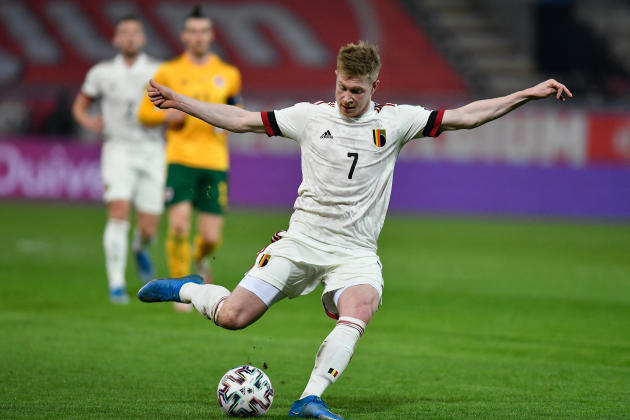
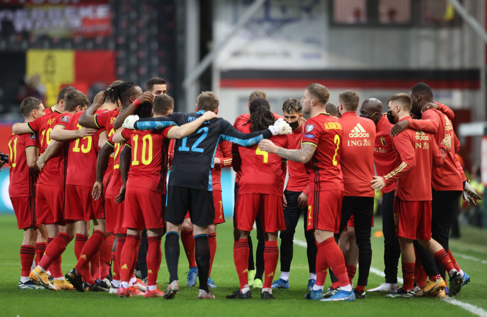
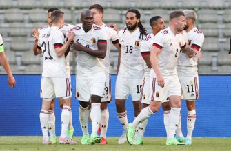
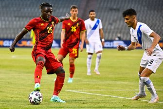
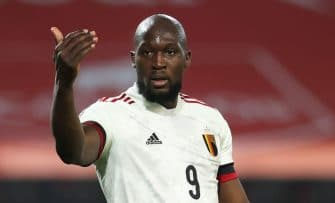
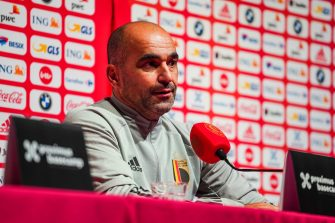

Le milieu belge Kevin De Bruyne, en match de qualification pour la Coupe du monde 2022 contre le Pays de Galles, le 24 mars 2021, à Louvain (Belgique). JOHN THYS / AFP Dernières actus Liège a inauguré ses ruches... connectées: "On ne devra plus aller les voir aussi souvent" Amical : la Belgique s’impose contre la Croatie Amical : la Belgique tenue en échec par la Grèce Belgique – Grèce : compos officielles, chaîne et heure du match Belgique : De Bruyne et Hazard seront prêts pour l’Euro selon Martinez